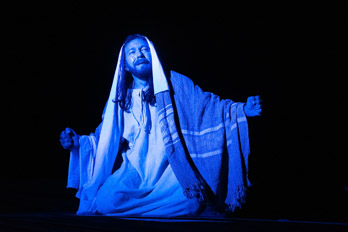

Projeto Owsada
O projeto fotográfico Owsada, desenvolvido entre 2016 e 2019, teve como objetivo capturar a beleza feminina em suas diversas formas. Durante esse período, várias mulheres foram fotografadas em diferentes ambientes, que incluíram estúdio fotográfico, praias, parques, sítios e outros locais em Fortaleza e Cascavel, no Ceará.
Através da lente do fotógrafo, as mulheres foram retratadas de forma única, explorando suas características individuais e destacando suas belezas naturais. Cada sessão fotográfica foi pensada e planejada cuidadosamente, levando em consideração a personalidade e o estilo de cada modelo.
O projeto Owsada não se limitou a apenas mostrar a beleza física das mulheres, mas também explorou suas emoções e personalidades, resultando em imagens autênticas e impactantes. As fotografias capturaram momentos únicos e verdadeiros, que foram imortalizados através das lentes do fotógrafo.
Owsada foi uma ode à beleza feminina, retratando-a de maneira autêntica e cativante. As fotografias resultantes são um testemunho da diversidade e da individualidade das mulheres fotografadas, além de representar uma obra de arte em si mesmas.

Para ver os ensásios do Projeto Owsada clique aqui.
Paixão de Cristo
A comunidade católica Paz e Bem tem um evento muito especial que acontece anualmente durante a Semana Santa: a encenação da Paixão de Cristo. Realizado com atores amadores da própria comunidade, o espetáculo é uma tradição que já dura muitos anos e que atrai um grande público todos os anos.
No dia da apresentação, a emoção toma conta de todos. O público acompanha a história da vida, morte e ressurreição de Jesus Cristo, interpretado pelos membros da comunidade, com muita atenção e envolvimento. A performance é carregada de significado e fé, tocando profundamente os corações dos presentes.
Para os atores, a experiência é uma oportunidade de se conectar ainda mais com a mensagem de amor e esperança trazida por Jesus, bem como de compartilhar essa mensagem com a comunidade. Além disso, a encenação da Paixão de Cristo é uma forma de reforçar os laços de união e fraternidade que unem os membros da comunidade Paz e Bem.
Essa tradição, que tem sido mantida por tantos anos, é uma expressão da força e vitalidade da comunidade católica Paz e Bem, bem como do poder transformador que a fé pode ter na vida das pessoas. A encenação da Paixão de Cristo é uma celebração da vida, do amor e da esperança, e uma forma de lembrar a todos que, mesmo nos momentos mais difíceis, podemos encontrar consolo e paz na presença de Deus.